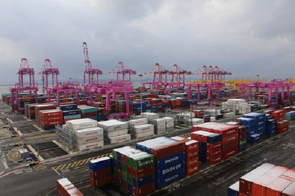
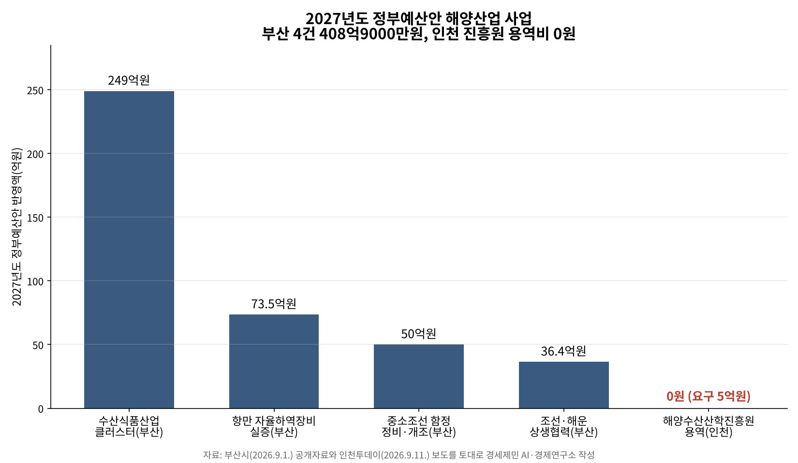
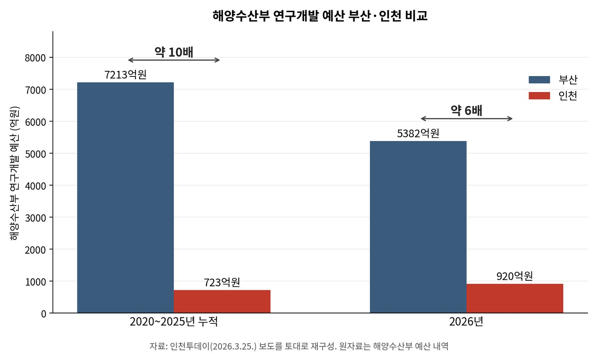

[인천해양주권⑦] 민주당 인천 국회의원 12명 또 침묵 방관
해수부 부산 이전 방관, 인천항만공사 폐지 방관, 진흥원 용역비 5억원 방관
부산 해양산업은 408억9000만원, 인천 진흥원 용역비는 두 해 연속 0원
해양수산산학진흥원을 세우려던 용역비 5억원이 내년도 정부예산안에서 빠졌다. 올해는 해양수산부가 요구안을 냈으나 기획예산처 심의에서 걸렸다. 지난해에는 국회 상임위에서 한 번 살아났다가 부처 협의에서 다시 빠졌다. 두 해 연속이다.
같은 예산안에서 부산은 해양산업 역점사업 넷으로 408억9000만원을 받았다. 해양수산부는 지난해 12월 부산으로 옮겨 갔고, 정부는 이달 인천항만공사를 없애 통합공사의 지사로 만들겠다고 발표했다. 셋이 한 방향이고, 인천 지역구 민주당 열두 명 가운데 목소리를 낸 사람은 하나였다.
1. 5억원은 무엇을 하려던 돈인가
이 용역은 단순한 설립 타당성조사가 아니다. 인천시는 해상풍력과 해양바이오를 포함한 해양수산 5대 신산업의 지원체계를 연구할 참이었다. 진흥원의 역할과 설립 타당성은 그 위에서 나온다. 인천 해양산업의 밑그림을 그리는 첫 단추다.

그 첫 단추가 두 해째 채워지지 않았다. 타당성조사조차 못 하게 되면서 설립 시점을 가늠할 수 없다. 인천시 섬해양정책과는 유관기관과 접촉하고 있다고 밝혔다. 두 해째 같은 말이다.
바깥에서는 판이 이미 짜였다. 인하대학교는 6월 16일 국립한국해양대학교와 업무협약을 했고 가칭 해양수산산학진흥원 건립 협력이 항목에 들어갔다. 해양 인재를 함께 키우겠다는 약속이다.
지난해 7월에는 인천항발전협의회와 인천항운노동조합이 인천시와 지역 국회의원을 불러 설립을 건의했다. 인천에 해양수산 연구기관이 없다는 것이 이유였다. 대학이 나서고 업계가 밀었는데 예산만 오지 않았다.
2. 부산은 넷을 받았다
부산시가 지난 1일 공개한 내용을 보면 해양산업 역점사업 넷이 내년도 정부예산안에 들어갔다. 수산식품산업 클러스터 249억원, 항만 자율하역장비 실증 73억5000만원, 중소조선 함정 정비·개조 50억원, 조선·해운 상생협력 36억4000만원이다.

인천시 국비가 줄어든 것도 아니다. 인천시는 지난 4일 내년도 국비가 7조863억원이라고 밝혔다. 올해보다 6128억원, 9.5% 늘어 처음 7조원을 넘었다. 역대 최대라는 그 안에 해양 항목은 내항 1·8부두 재개발 20억원 하나다.
인천시가 지난달 20일 국회에 건의한 핵심 국비사업은 12건 2107억원이었다. 진흥원 설립 5억원은 열 번째이자 가장 작은 금액이었다. 그 5억원이 정부안에 없다.
3. 권한을 내린다더니
이 정부의 간판은 5극3특 균형발전이다. 중앙이 쥔 권한을 지방으로 내리겠다는 설계이고, 지방시대위원회가 지난해 9월 30일 설계도를 의결했다. 인천은 경인경제권에 든다.
항만공사 통합은 그 반대로 간다. 항만마다 나뉜 정책과 예산 권한을 본사 하나로 올리는 일이다. 진흥원 용역비를 뺀 것도 결이 같다. 지방이 제 손으로 연구기관을 세우겠다는데 조사비를 주지 않았다.
격차는 이미 숫자로 남았다. 해양수산부 연구개발 예산은 2020년부터 2025년까지 부산 7213억원, 인천 723억원이었다. 올해도 부산 5382억원에 인천 920억원이다. 인천이 제 거점을 세우겠다고 한 까닭이 여기 있다.

4. 김대중이 구상하고 노무현이 세웠다
항만공사는 김대중 정부가 1999년 항만자치공사로 구상했고 노무현 정부가 법으로 세웠다. 부산항만공사가 2004년, 인천항만공사가 2005년에 문을 열었다. 항만공사법은 공사를 법인으로 두고 항만별로 세우게 했다. 스무 해가 지났다.
정부는 지난 3일 기자회견에서 지역에 흩어진 항만공사 넷을 하나로 묶는다고 밝혔다. 통합되면 인천항만공사라는 법인은 없어지고 통합공사가 인천에 두는 지사만 남는다. 지사는 공사가 아니다. 같은 법 제3조가 보장한 자율적 운영도 그 법인과 함께 사라진다.
통합 본사가 어디 서는지는 아직 정해지지 않았다. 해양수산부는 이미 부산으로 갔다. 인천 항만업계는 부산이 본사 유치까지 기대할 수 있다고 본다. 인천에 남는 것은 지사다. 두 전직 대통령이 편 지방분권을 같은 뿌리의 정부가 거꾸로 돌린다.
5. 또 침묵하는 인천 민주당 국회의원 12명
인천 지역구는 14석이고 그 가운데 12석이 더불어민주당이다. 정부가 이달 3일 통합을 공식화한 뒤 개별로 반대 의견을 낸 사람은 민주당에서 정일영 하나이고 국민의힘에서 배준영이다. 나머지 열한 명은 말이 없다.
상임위가 이유는 아니다. 민주당 소속 인천 국회의원과 6·3 지방선거 출마자 일동은 지난 5월 17일 인천공항공사 통합에 반대한다는 공동 입장을 냈다. 공항도 농림축산식품해양수산위원회 소관이 아니다. 성명을 내는 데 상임위 배치가 필요한 것은 아니다. 공항에는 냈고 항만에는 내지 않았다.
농해수위에 인천 의원이 없는 것은 사실이다. 전반기 맹성규 의원 이후 계속 비어 있다. 신규철 전환사회시민행동 운영위원장은 "농해수위 위원도 인천 몫으로 1명도 배치 안 하고, 인천항 발전을 저해하는 문제에 대해서 발언도 없다"고 했다.
되풀이다. 지난해 해양수산부 부산 이전 때 민주당 인천 의원은 열한 명이었고, 지금 열두 명 가운데 열이 그때 그 자리에 있었다. 통합안이 지난 5월 처음 나온 뒤 6월까지도 열두 명은 입장을 내지 않았다. 그때도 이번에도 조용했다.
같은 당에서도 다르게 움직인 사람이 있다. 박성현 광양시장 당선인은 6월 22일 입장문에서 정부의 통합 시도를 국가 백년대계를 흔드는 무책임한 처사라고 했다. 국회의원도 아니고 인천 사람도 아니다.
인천시도 조용하기는 마찬가지다. 송현석 정책수석은 지난 9일 "통합 반대다, 찬성이다를 넘어서 실제로 인천의 일자리, 산업, 경제적 이익이 무엇인지를 살펴봐야 한다"고 했다. 공항공사 통합에는 같은 자리에서 "인천시 판단이 명확하다"고 갈랐다.
규탄 기자회견을 여는 쪽도 인천이 아니다. 해양수산부 장관을 지낸 국민의힘 조승환 의원이 14일 자리를 열고 항만 4개 지역 여야 의원에게 연명 의사를 묻고 있다. 인천 의원들에게 온 것은 이름을 올릴지 묻는 물음이다.
통합은 항만공사법을 고쳐야 이뤄진다. 그 법을 고칠 국회의 다수가 민주당이고 인천 12석도 민주당이다. 5억원을 되살릴 상임위도 같은 국회에 있다. 막을 힘은 인천 안에 있다. 그 열두 명이 무엇을 하고 있는지는 아직 보이지 않는다.
참고문헌
- 인천광역시(2026), 『인천시, 국회 찾아 2027년 핵심 국비사업 2,107억 원 반영 총력』 보도자료, 2026.08.20. https://www.incheon.go.kr/IC010205/view?repSeq=DOM_0000000015356124
- 인천광역시(2026), 『인천시, 내년도 국비 7조 시대 활짝 연다…역대 최대』 보도자료, 2026.09.04. https://www.incheon.go.kr/IC010205/view?repSeq=DOM_0000000015473520
- 국무총리실(2026), 『행정, 공공기관 이전 및 공공기관 기능 개혁 관련 기자회견』, 대한민국 정책브리핑, 2026.09.03. https://www.korea.kr/briefing/policyBriefingView.do?newsId=156780091
- 해양수산부(2025), 『해양수산부 부산 이전 시작』 보도자료, 2025.12.06. https://www.mof.go.kr/doc/ko/selectDoc.do?docSeq=64070&bbsSeq=10&menuSeq=971
- 김도윤(2026), "해양산학진흥원 설립 '난항'···인천 해양산업 컨트롤타워 '공백' 장기화", 『인천투데이』, 2026.09.11. https://www.incheontoday.com/news/articleView.html?idxno=323518
- 이종선(2026), "부산은 잃을 것 없는 공항·항만 통합···인천 민주당 또 침묵 '직무유기'", 『인천투데이』, 2026.06.24. https://www.incheontoday.com/news/articleView.html?idxno=320548
- 박규호·인투아이(2026), "인천시, 인천항만공사 통합에 '신중론'··· '실익부터 따져야'", 『인천투데이』, 2026.09.09. https://www.incheontoday.com/news/articleView.html?idxno=323419
- 『항만공사법』[법률 제21065호, 2025.10.1. 타법개정], 제3조 자율적 운영의 보장과 제4조 법인격 등. 국가법령정보센터. https://www.law.go.kr/법령/항만공사법
- 정혜리(2026), "'항만공사 통합 저지' 여야 지역의원 뭉치나", 『인천일보』, 2026.09.10. https://www.incheonilbo.com/news/articleView.html?idxno=1331756
- 인천투데이(2026), "인천해양진흥원 설립 필요성 '확인'··· 해양산업 부산 쏠림 대안 부각", 2026.03.25. https://www.incheontoday.com/news/articleView.html?idxno=316923
[사진 출처]
- [사진1] 인천항만공사 제공 사진(인천 신항 컨테이너부두)
- [도표1] 경세제민 AI·경제연구소 작성. 자료 부산시 2026년 9월 1일 공개자료, 인천투데이 2026년 9월 11일 보도
- [도표2] 경세제민 AI·경제연구소 작성. 자료 인천투데이 2026년 3월 25일 보도(해양수산부 예산 내역)
※ 이 기사는 AI 프로그램 클로드를 활용해 작성했습니다.
관련기사
- [인천해양주권⑥] 이재명 정부 항만공사 통합, 부산항 빚 4조4121억원 인천에 전가
- [인천해양주권⑤] LH 분리 PA 통합 '원칙 없는 행정'... 지지율은 최저 기록
- [인천해양주권④] 김대중 구상 노무현 설립 지역항만공사, 이재명 정부가 걷어차
- [인천해양주권⑨] 7월에 맡기고 9월에 없앤다, 인천 해상풍력 부두
저작권자 © AI경세제민 무단전재 및 재배포, AI학습 및 활용 금지